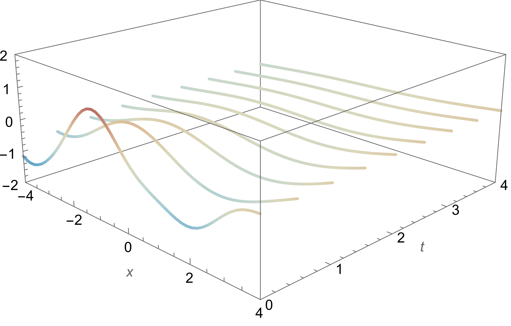
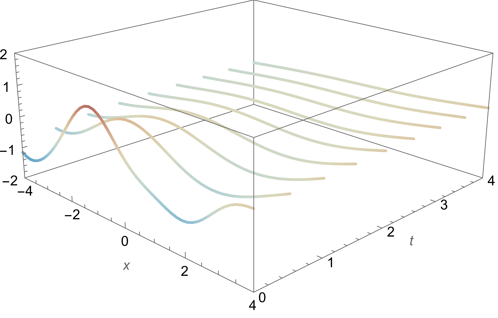

Learning solutions to PDE
Marc Härkönen
Max Planck Institute for Mathematics in the Sciences
Presentation for Fano Labs,
Dec 07, 2022
Introduction
- Deep Neural Networks can be thought of as function approximators
- Data X,Y $\to$ function $f_\theta(x)$ such that $f_\theta(X) \approx Y$
- If the data comes from a physical system, we want to use the physical constraint in learning
- Heat dissipation $\to$ heat equation
- Waves, vibrations $\to$ wave equation
- Magnetic field $\to$ Maxwell's equations
- If $A(\partial)$ is a PDE, we want also that $A(\partial) f_\theta = 0$
- State-of-the-art: PINN, adds a penalty term $\|A(\partial)f\|^2$ to the loss function
- However:
- Hard to optimize (many bad local minima)
- How to balance between data fit and PDE fit?
- Only approximately solves the PDE
- Our contribution: Gaussian process priors that solve PDE
-
- Fully Bayesian, data-driven training
- Realizations solve the PDE exactly
- Describes a distribution on the space of solutions $\to$ generative model
Example
$$ \phi'''(z)-3\phi'(z)+2\phi(z) = 0 $$
Characteristic polynomial:
$$ x^3-3x+2 = 0 $$
$$ (1-x)^2(x+2) = 0 $$
Solutions spanned by
- $e^z$
- $ze^z$
- $e^{-2z}$
Example
$$ \phi'''(z)-3\phi'(z)+2\phi(z) = 0 $$
Characteristic polynomial:
$$ (1-x)^2(x+2) = 0 $$
Solutions spanned by
- $e^z$
- $ze^z$
- $e^{-2z}$
We set $$f(z) = c_1 e^z + c_2 z e^z + c_3 e^{-2z}$$ where $(c_1,c_2,c_3) \sim \mathcal{N}(0, \Sigma)$.
$f(z)$ is a Gaussian process.
Its realization space is precisely the
set of solutions to the ODE.
Example
We set $$f(z) = c_1 e^z + c_2 z e^z + c_3 e^{-2z}$$ where $(c_1,c_2,c_3) \sim \mathcal{N}(0, \Sigma)$.
$f(z)$ is a Gaussian process.
Its realization space is precisely the
set of solutions to the ODE.
Inference
use $f(z)$ as a prior distribution on functions
condition on (noisy) data $Z, f(Z)$ to get a posterior
we infer using the posterior mean
the posterior variance gives a measure of confidence
Gaussian Processes
Continuous analogue of Gaussian random vectors
$ f(\mathbf{z}) \sim \operatorname{GP}(\mu(\mathbf{z}), k(\mathbf{z},\mathbf{z}')) $
For any $z_0 \in \RR^n$, $f(z_0)$ is Gaussian $$ \mathbb{E}[f(z_0)] = \mu(z_0) $$
For any $z_0, z_1 \in \RR^n$, $[f(z_0), f(z_1)]$ is jointly Gaussian $$ \operatorname{Cov}(f(z_0), f(z_1)) = k(z_0,z_1) $$
Gaussian Processes
Continuous analogue of Gaussian random variables
$ f(\mathbf{z}) \sim \operatorname{GP}(\mu(\mathbf{z}), k(\mathbf{z},\mathbf{z}')) $
$ \mathbb{E}[f(\mathbf{z})] = \mu(\mathbf{z}) $
$ \operatorname{Cov}(f(\mathbf{z}), f(\mathbf{z}')) = k(\mathbf{z},\mathbf{z}') $

$ k(z,z') = e^{-\frac{(z-z')^2}{2}}, \qquad \mu(x) = 0 $
Gaussian Processes
Continuous analogue of Gaussian random variables
$ f(\mathbf{z}) \sim \operatorname{GP}(\mu(\mathbf{z}), k(\mathbf{z},\mathbf{z}')) $
$ \mathbb{E}[f(\mathbf{z})] = \mu(\mathbf{z}) $
$ \operatorname{Cov}(f(\mathbf{z}), f(\mathbf{z}')) = k(\mathbf{z},\mathbf{z}') $
$ k(z,z') = e^{-\frac{(z-z')^2}{2}}, \qquad \mu(x) = 0 $
$ \Rightarrow $

Posterior distribution is also a GP
Example
We set $$f(z) = c_1 e^z + c_2 z e^z + c_3 e^{-2z}$$ where $(c_1,c_2,c_3) \sim \mathcal{N}(0, \Sigma)$.
$f(z)$ is a Gaussian process.
Its realization space is precisely the
set of solutions to the ODE.
$$\mu(z) = \mathbb{E}[f(z)] = 0$$
$$ \begin{gather*}k(z,z') = \mathbb{E}[f(z)f(z')] \\ = \begin{bmatrix} e^z & ze^z & e^{-2z}\end{bmatrix} \Sigma \begin{bmatrix} e^{z'} \\ {z'}e^{z'} \\ e^{-2{z'}}\end{bmatrix} \end{gather*}$$
$$\begin{bmatrix} f(z_1) \\ f(z_2)\end{bmatrix} = \mathcal{N}\left(0, \begin{bmatrix} k(z_1,z_1) & k(z_1,z_2) \\ k(z_2,z_1) & k(z_2,z_2) \end{bmatrix} \right)$$
Gaussian Processes
Derivatives of Gaussian processes are Gaussian processes
$f(z) \sim \text{GP}(\mu(z), k(z,z'))$
$\partial_z f(z) \sim \text{GP}(\partial_z \mu(z), \partial_z\partial_{z'} k(z,z'))$
We say a GP solves the PDE $A(\partial)$ if all realizations solve the PDE $A(\partial)$
Equivalently: $A(\partial)\mu = 0$ and $A(\partial_z)A(\partial_{z'})^T k(z,z') = 0$
Challenge:
Set $\mu = 0$. How to find $k(z,z')$ such that $AA^Tk = 0$?
Theorem (Ehrenpreis'54, Palamodov'63)
Let $I \subseteq \CC[x_1,\dotsc,x_n]$ denote a system of PDE. There exists are algebraic varieties $V_1,\dotsc, V_s$ and polynomials $D_{i,1}, \dotsc, D_{i,t_i}$ such that all distributional solutions $\phi$ are of the form $$ \phi(z) = \sum_{i=1}^s \sum_{j=1}^{t_i} \int_{V_i} D_{i,j}(x,z) \exp(x^T \cdot z)\,\mathrm{d}\mu_{i,j}(x) $$ for a suitable set of measures $\mu_{i,j}$.
Theorem (Ehrenpreis'54, Palamodov'63)
Let $I \subseteq \CC[x_1,\dotsc,x_n]$ denote a system of PDE. There exists are algebraic varieties $V_1,\dotsc, V_s$ and polynomials $D_{i,1}, \dotsc, D_{i,t_i}$ such that all distributional solutions $\phi$ are of the form $$ \phi(z) = \sum_{i=1}^s \sum_{j=1}^{t_i} \int_{V_i} D_{i,j}(x,z) \exp(x^T \cdot z)\,\mathrm{d}\mu_{i,j}(x) $$ for a suitable set of measures $\mu_{i,j}$.
Macaulay2, version 1.20
i1 : needsPackage "NoetherianOperators";
i2 : R = QQ[x,y,z];
i3 : I = ideal(x*y-x*z,x^2*z,x^3);
i4 : solvePDE I
o4 = {{ideal x, {| 1 |}}, {ideal (y - z, x), {| dx |}}, {ideal (z, y, x), {| dx^2 |}}}
o4 : List
J. Chen, Y. Cid-Ruiz, M. Härkönen, R. Krone, and A. Leykin, Noetherian operators in Macaulay2, 2021. arXiv:2101.01002.
Theorem (Ehrenpreis'54, Palamodov'63)
Let $I \subseteq \CC[x_1,\dotsc,x_n]$ denote a system of PDE. There exists are algebraic varieties $V_1,\dotsc, V_s$ and polynomials $D_{i,1}, \dotsc, D_{i,t_i}$ such that all distributional solutions $\phi$ are of the form $$ \phi(z) = \sum_{i=1}^s \sum_{j=1}^{t_i} \int_{V_i} D_{i,j}(x,z) \exp(x^T \cdot z)\,\mathrm{d}\mu_{i,j}(x) $$ for a suitable set of measures $\mu_{i,j}$.
We have almost everyhting! What about $d\mu_{i,j}$?
- Impose a measure (uniform,Gaussian,???)
- Learn a measure
Gaussian measures
$$ k(z,z') = \int_V D(x,z) e^{x^T z} \cdot \overline{D(x,z') e^{x^T z'}}^T e^{-\frac{\|x\|^2}{2}} d\mathcal L(x) $$
Why is this reasonable?
- Similar to Fourier transform based GP kernels
- If no PDE conditions, we recover the RBF kernel
- In many simple cases, realizations cover the whole solution space
- Excellent for generative tasks
In practice: Monte-Carlo
1D heat equation: $\partial_t = \partial_x^2$
 

In practice: Monte-Carlo
1D heat equation: $\partial_t = \partial_x^2$

2D wave equation: $\partial_t^2 = \partial_x^2 + \partial_y^2$
3D Maxwell equations
$\nabla \cdot E = 0, \qquad \nabla \cdot B = 0, \qquad \nabla \times E = - \frac{\partial B}{\partial t}, \qquad \nabla \times B = \frac{\partial E}{\partial t}$
Electric field $E$
Magnetic field $B$
Heat equation: GP vs Physics Informed Neural Network

Heat equation: GP vs Physics Informed Neural Network
As a PDE solver, 2D heat
As a PDE solver, 2D wave
Learning the measure
We approximate the weighted sum
$$ f(z) = \sum_{i=1}^m w_i D(z,x_i)e^{x_i^T z} $$
If we set a Gaussian prior $w \sim \mathcal{N}(0, \Sigma)$, we get a sparse Gaussian process.
Goal: Learn the covariance $\Sigma$ and points $x_i \in V$ that maximize the (marginal) log-likelihood.
Objective: log marginal likelihood $$\log p(y) = -\frac{1}{2\sigma^2}(yy^T - y^T \Phi^H A^{-1} \Phi y) - \frac{n-m}{2} \log \sigma^2 - \frac{1}{2}\log |A| - \frac{1}{2} \log |\Sigma| + C$$
Learning a 2D wave
Numerical solution
Trained Gaussian Process
Trained PINN model
Thank you!
Hybird CTC/Attention Architecture
for End-To-End Speech Recognition
Marc Härkönen
Presentation for Fano Labs
Dec 7, 2022
Introduction
- Given a sequence of speech $X$, find the most likely sequence $\hat C$ of characters.
- Bayesian decison theory: $\hat C = \argmax_{C} p(C \mid X)$
- Goal: Model the posterior $p(C \mid X)$
- Traditional ASR methods
- Many modules: language, acoustic, lexicon models
- Modules trained separately, involve expert information
- Hard to optimize jointly
- End-to-end models
- Simpler architecture, doing all tasks
- Fully data driven
- Common architectures: CTC and Attention
Connectionist Temporal Classification (CTC)
Connectionist Temporal Classification (CTC)
- Encode speech $X = x_1,\dotsc, x_T$ into framewise characters $Z = z_1,\dotsc,z_T$
- Given the sequence of framewise characters $Z$, reconstruct a readable sequence of characters $C = c_1,\dotsc,c_L$
$$ p(C \mid X) \approx \sum_Z p(C \mid Z) p(Z \mid X) $$
- $p(Z \mid X)$: CTC acoustic model
- $p(C \mid Z)$: CTC letter model
Detail: to distinguish between repeated letters, we reconstruct $C' = \emptyset, c_1, \emptyset, \dotsc, c_L, \emptyset$
$p(Z \mid X)$: CTC acoustic model
- $p(Z \mid X) \approx \prod_{t=1}^T p(z_t \mid X)$
- We define: $$ \begin{align*} \vec{h}_t &= \mathrm{BLSTM}_t(X)\\ p(z_t \mid X) &= \mathrm{Softmax}(\mathrm{LinB}(\vec h_t)) \end{align*} $$
$p(C \mid Z)$: CTC letter model
- $p(C \mid Z) = \frac{p(Z \mid C)p(C)}{p(Z)} \approx \prod_{t=1}^T p(z_t \mid z_{t-1}, C) \frac{p(C)}{p(Z)}$
Possible state transistions $z_{t-1} \to z_t$
- $z_{t-1} = c_l \implies z_{t} = c_l$
- $z_{t-1} = c_{l-1} \implies z_{t} = c_l$
- $z_{t-1} = c_{l-2} \implies z_{t} = c_l$, if $ c_{l-2} \neq \emptyset$
Connectionist Temporal Classification (CTC)
We have $$ p(C \mid X) \approx \sum_Z \prod_{t=1}^T p(z_t \mid z_{t-1}, C) p(z_t \mid X) \frac{p(C)}{p(Z)} $$
- Preserves alignment
- Conditional independence
Attention mechanism
$$ p(C \mid X) = \prod_{l=1}^L p(c_l \mid c_1,\dotsc,c_{l-1}, X) $$
Define $$ \begin{gather*} \vec h_t = \text{BLSTM}_t(X) \\ \vec r_l = \sum_{t=1}^T a_{lt} \vec h_t\\ p(c_l \mid c_1,\dotsc,c_{l-1}, X) = \text{Decoder}(\vec r_l, \dots) \end{gather*} $$
No conditional independence assumption
Alignment issues: matrix $a_{lt}$ may be far from diagonal
$$ \begin{gather*} \vec h_t = \text{BLSTM}_t(X) \\ \vec r_l = \sum_{t=1}^T a_{lt} \vec h_t \end{gather*} $$
$a_{l,1:T}$ is obtained from $a_{l-1,1:T}, \vec{q}_{l-1}, \vec h_t$ given as follows:
- Convolve: $\vec f_{1:T} = K * a_{l-1,1:T}$
- Score: $e_{lt} = \vec g^T \tanh( \text{Lin}(\vec q_{l-1}) + \text{Lin}(\vec h_t) + \text{LinB} (\vec f_t) )$
- Softmax: $a_{l,1:T} = \text{Softmax}(e_{l,1:T})$
$$ \begin{gather*} p(c_l \mid c_1,\dotsc,c_{l-1}, X) = \text{Decoder}(\vec r_l, \vec q_{l-1}, \vec c_{l-1}) \end{gather*} $$
Hidden state $\vec q_l$ is updated using $$ \vec q_l = \text{LSTM}_l(\vec r_l, \vec q_{l-1}, c_{l-1}), $$
and the likelihood is given by $$ \begin{gather*} p(c_l \mid c_1,\dotsc,c_{l-1}, X) = \text{Softmax}(\text{LinB}(\vec q_l)) \end{gather*} $$
Training
$$ \mathcal{L} = \lambda \log p_{CTC}(C \mid X) + (1-\lambda) \log p_{ATT}^*(C \mid X), $$ where
$p_{CTC}(C \mid X) = \sum_Z \prod_{t=1}^T p(z_t \mid z_{t-1}, C) p(z_t \mid X)$
and
$p_{ATT}^*(C \mid X) = \prod_{l=1}^L p(c_l \mid c_{1}^*, \dotsc, c_{l-1}^*, X)$
Decoding
$\hat C = \argmax_{C} \log p(C\mid X)$
Beam search as a heuristic
Goal: score prefixes, $\alpha(h,X) = \lambda \alpha_{CTC}(h,X) + (1-\lambda) \alpha_{ATT}(h,X)$
Scoring
$\alpha_{ATT}(h,X) = \log p_{ATT}(h \mid X)$
$\alpha_{CTC}(h,X) = \log p_{CTC}(h,\dotsc \mid X) = \log \sum_{h \cdot \nu} p_{CTC}(h \cdot \nu \mid X)$
Q: How to compute this sum?
A: Dynamic programming
CTC label sequence score
Suppose we want to score: "SOS, a, b" and $T=4$
Define $\gamma_t^{(n)}(h)$: probability of all CTC paths of length $t$ decoding to $h$,
ending in a non $\square$ character
Define $\gamma_t^{(b)}(h)$: probability of all CTC paths of length $t$ decoding to $h$,
ending in a $\square$ character
Suppose we want to score: "SOS, a, b" and $T=4$
h = SOS
$\gamma_1^{(n)}(SOS) = \gamma_2^{(n)}(SOS) = \gamma_3^{(n)}(SOS) = \gamma_4^{(n)}(SOS) = 0$
$\gamma_1^{(b)}(SOS) = p(z_1 = \square \mid X)$
$\gamma_2^{(b)}(SOS) = p(z_1 = \square, z_2 = \square \mid X)$
$\gamma_3^{(b)}(SOS) = p(z_1 = \square, z_2 = \square, z_3 = \square \mid X)$
$\gamma_4^{(b)}(SOS) = p(z_1 = \square, z_2 = \square, z_3 = \square, z_4 = \square \mid X)$
Suppose we want to score: "SOS, a, b" and $T=4$
h = SOS
$\gamma_1^{(n)}(SOS) = \gamma_2^{(n)}(SOS) = \gamma_3^{(n)}(SOS) = \gamma_4^{(n)}(SOS) = 0$
$\gamma_1^{(b)}(SOS) = \square$
$\gamma_2^{(b)}(SOS) = \square \square$
$\gamma_3^{(b)}(SOS) = \square \square \square$
$\gamma_4^{(b)}(SOS) = \square \square \square \square$
Suppose we want to score: "SOS, a, b" and $T=4$
h = SOS, a
$\gamma_1^{(n)}(h) = a$
$\gamma_2^{(n)}(h) = aa + \square a$
$\gamma_3^{(n)}(h) = aaa + \square aa + \square \square a a$
$\gamma_4^{(n)}(h) = aaaa + \square aaa + \square \square aa + \square \square \square a$
$\gamma_1^{(b)}(h) = 0$
$\gamma_2^{(b)}(h) = a \square$
$\gamma_3^{(b)}(h) = aa\square + \square a \square + a \square \square$
$\gamma_4^{(b)}(h) = \gamma_3^{(n)} \square + \gamma_3^{(b)} \square$
Suppose we want to score: "SOS, a, b" and $T=4$
h = SOS, a, b
$\gamma_1^{(n)}(h) = 0$
$\gamma_2^{(n)}(h) = ab$
$\gamma_3^{(n)}(h) = abb + aab + \square a b + a \square b$
$\gamma_4^{(n)}(h) = (\gamma_3^{(b)}(SOS, a) + \gamma_3^{(n)}(SOS,a) + \gamma_3^{(n)}(h)) b$
$\gamma_1^{(b)}(h) = 0$
$\gamma_2^{(b)}(h) = 0$
$\gamma_3^{(b)}(h) = ab\square$
$\gamma_4^{(b)}(h) = (\gamma_3^{(n)}(h) + \gamma_3^{(b)}(h)) b$
Suppose we want to score: "SOS, a, b" and $T=4$
h = SOS, a, b
$$ \begin{align*} p_{CTC}(h,\dotsc \mid X) =& ab \\ &+ aab + \square ab + a\square b\\ &+ aaab + \square aab + \square\square ab + aa\square b + \square a \square b + a \square \square b \end{align*}$$
Conclusion
- End-to-End ASR systems are fully data-driven, and don't require linguistic resources
- CTC models align $X$ and $C$, but has many conditional independence assumptions
- Attention based models have no conditional independence assumptions, but the alignment is completely unconstrained
- The hybrid CTC/attention based model tries to balance the two objectives.
- Training and decoding can be done effectively using dynamic programming